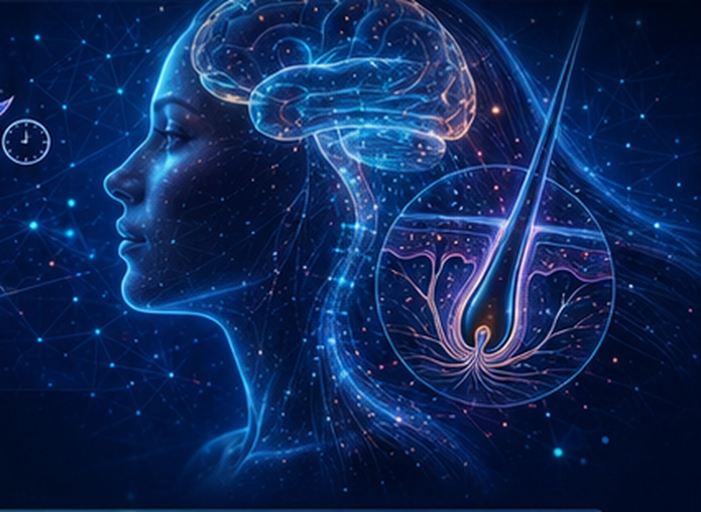

Sleep and
Human Beauty
Sleep-dependent neurochemical and neuroendocrine regulation shapes skin, scalp, and hair homeostasis and healthy aging.
Discover the Science
01
Hair–Scalp Biology and Healthy Aging
Restorative sleep supports hair growth, scalp homeostasis, pigment maintenance, and healthy hair aging through neuroendocrine and neurochemical regulation.
Visible Hair–Scalp Beauty Outcomes
Recovery & Resilience Support
02
An Integrated System
How sleep-dependent signals and neuroregulation orchestrate skin, scalp, and hair beauty.
Sleep Quality Inputs
Primary Sleep-
Dependent Signals
Central Neurochemical & Neuroendocrine Hub
Sensory–Affective
Neuroregulatory Inputs
The Skin–Hair Beauty Axis
Shared Beauty Outcomes
03
Skin Biology and Healthy Aging
Restorative sleep supports skin barrier integrity, repair, tone, and healthy aging through neurochemical and neuroendocrine regulation.